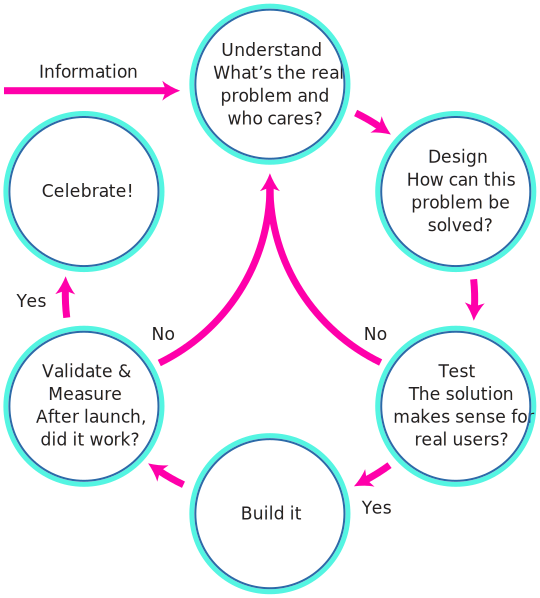
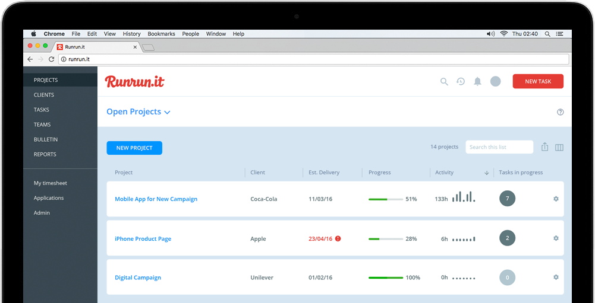

Runrun.it: Designing for complexity
Runrun.it is a tool for companies that need to formalize their workflow, track what is being done and measure individual performance.
It’s a well rounded B2B application that combines project management, time tracking, workflow system and communication platform.
Leading the product team
At Runrun.it, I led the product team, making sure we built the right things at the right time, in the best way possible. For that to happen it was important that we had a long term vision for the product and that the team would be continuously learning.
We coined the long term vision and used that as a compass for every feature decision. Runrun.it should:
- Be easy to use for those with no experience in project management
- Automate repetitive tasks
- Anticipate actions and proactively ask the user if she wants to do it
A process for solving problems
We set up a system to gather user feedback from our sales and support teams. Combined with user interviews and tests, that creates a feedback loop of information for the product team, allowing everybody to learn with every step taken.
From the information collected we formulate “problems” – it can be a user or business need. Here it’s important to really dig for a diagnosis, not just the symptoms, and how we measure if it’s solved.
The board defines the strategy for the quarter and which KPIs must be improved. From that we select the most relevant “problems” and start the design process.

This process resulted in several new features and improvements with a great success rate. Because our clients use Runrun.it for their day-to-day operations, it is incredibly important to minimize mistakes (and fix them fast) and countinuos learning plays a major role in that.
We created a system that is easy to use and desktop and mobile apps that complement each other, focusing on it’s strong suits.
Runrun.it is optimized for decision-making: always calculates changes – via time tracking – and knows if everything is like planned, if there’s risk of a problem or if there’s already a problem.
If something is off and a action is necessary, the user is notified. If everything is running smoothly, scheduled reports are sent. Users don’t need to monitor every change, unless they want to.
Most information is coupled with shortcuts for probable or system suggested actions, so users can react instantly if needed.
We translate information visually to give users quick understanding of how everything is going. We use charts for fast communication and text as support, for specific details. Color is used consistently and always with intent, to inform status.
Users have different permissions for access information (for example, not everybody can see costs of a project), so the interface was made to be adaptable for every user.
Likewise, every company has it's own way of working. A information that is important for one company is useless for another
The interface is designed to be adaptative. Every company works in a different way and can customize Runrun.it to fit their workflow. Almost every screen is customizable and the user can pick and choose which information wants to see and how.
Likewise, inside a company there are different users with different permissions (for example, not everybody should be able to see a project's costs), so the interface adapts to show only what is permitted.
To see more, checkout Runrun.it for web, iOS and android apps.
